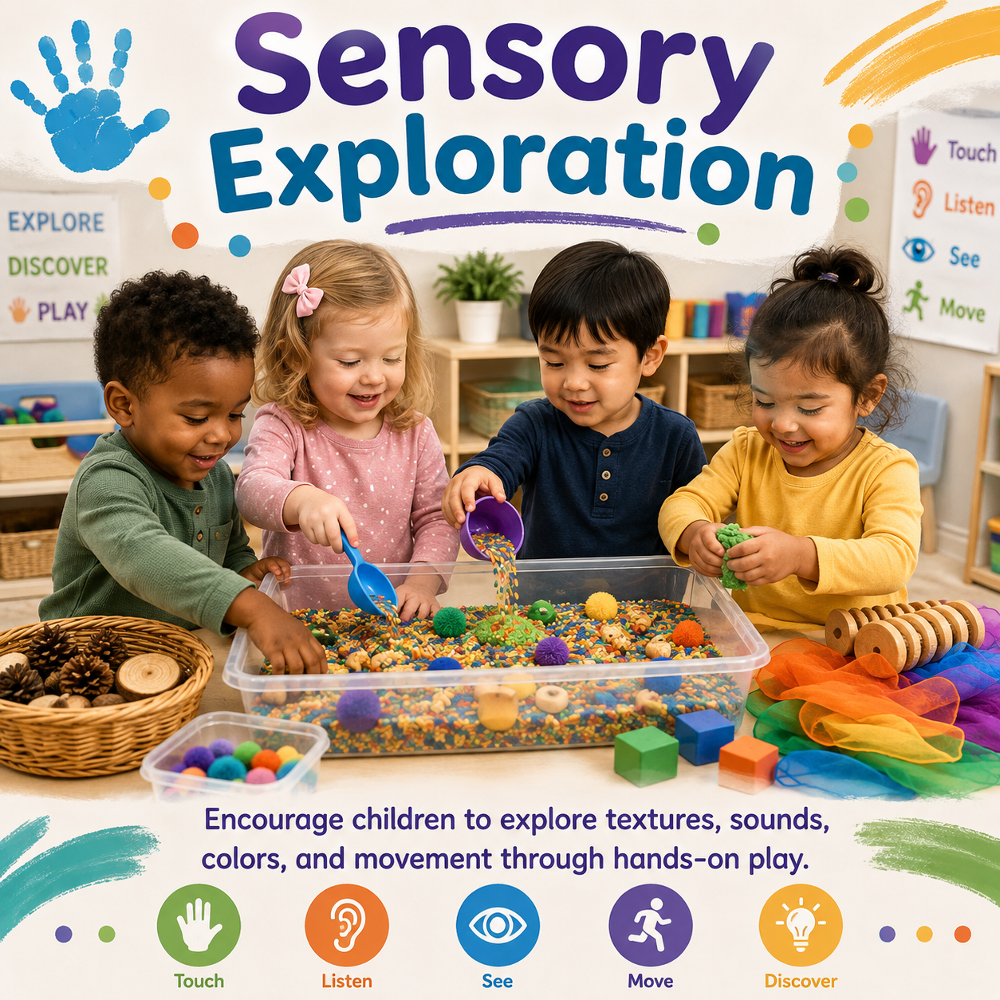
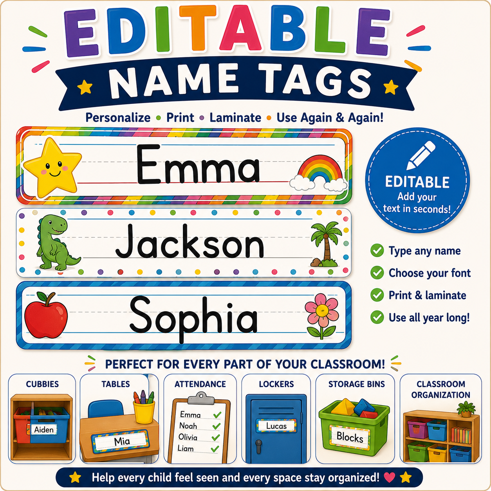
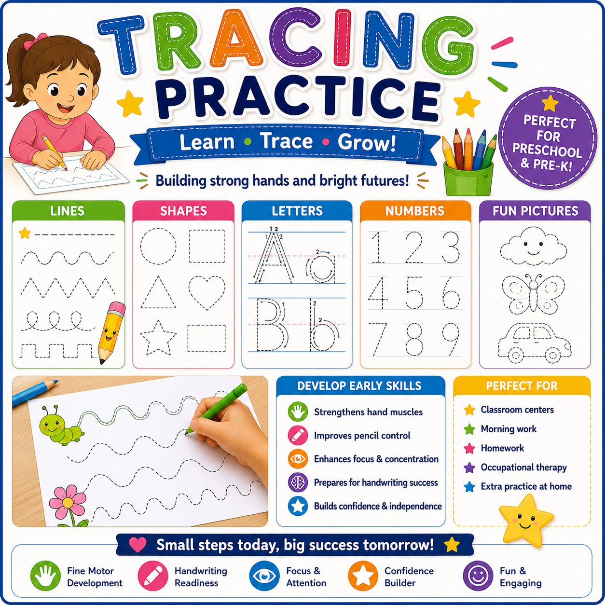

Hand Strength
Play Dough Builders
Children squeeze, roll, pinch, and shape play dough while strengthening small hand muscles.
Fine motor activities help children strengthen their hands and fingers while developing coordination, control, confidence, and independence through play.

Children develop important skills through activities that involve grasping, squeezing, drawing, building, cutting, and creating. Fine motor experiences support classroom independence, early writing skills, and everyday tasks.
Hands-on activities that strengthen children's hands, fingers, coordination, and independence.

Children squeeze, roll, pinch, and shape play dough while strengthening small hand muscles.

Children develop hand control, coordination, and confidence using scissors safely.

Children practice grasping, patterns, concentration, and hand-eye coordination.

Children practice lines, shapes, tracing, and drawing to prepare for writing.
Build children's confidence through purposeful hand experiences.
Squeezing, pinching, grasping, and building control.
Cutting practice and tool control.
Patterns, coordination, and concentration.
Lines, shapes, tracing, and drawing.
Blocks, puzzles, and manipulatives.
Painting, stamping, and creative materials.
Simple classroom experiences that strengthen little hands.
Children squeeze, roll, cut, and create with play dough to strengthen hand muscles.
Children practice cutting paper, following lines, and creating artwork.
Children thread beads while creating patterns and designs.
Children trace lines, shapes, and pathways to build writing readiness.
Fine motor experiences help children develop control, coordination, confidence, and independence for everyday learning.
Children strengthen the muscles needed for grasping, writing, dressing, and daily tasks.
Children practice pencil control, drawing, tracing, and early writing movements.
Children develop accuracy through puzzles, building, threading, and manipulation activities.
Children gain confidence with self-help skills such as dressing, feeding, and classroom tasks.
Provide daily opportunities for children to strengthen skills through meaningful play and classroom experiences.
Offer play dough, blocks, puzzles, tools, and manipulatives throughout the day.
Allow children to draw freely and practice early writing movements.
Connect fine motor activities to real classroom and self-help skills.
Children develop control through practice, repetition, and encouragement.
Choose experiences that support children's developmental stages.
Fine motor activities support physical development, approaches to learning, creativity, independence, problem solving, and school readiness.